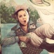

colorado girl. daughter. sister. wife. aunt.
animal lover. dog owner. nature lover.
developer.
crafter. crocheter. knitter. doodler.


Interests
During the day I'm working on writing software. In my free time I like to do outdoor activities, crochet, knit, enjoy a tasty beverage. Have you ever heard that knitting and coding are similar?
"Knitting like coding gives you the freedom to create"~ M.K.Carroll